Milestone 7: underwriter workspace, monitoring and payouts
Fictional demo data. The 2008 long rains at Rongai West are a labelled replay of a real drought in the CHIRPS record.
Underwriter workspace (demo-underwriter)
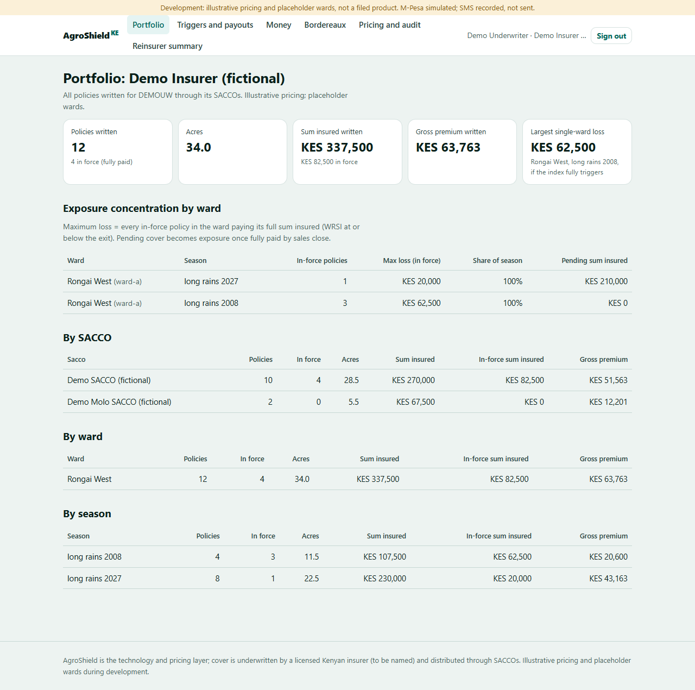
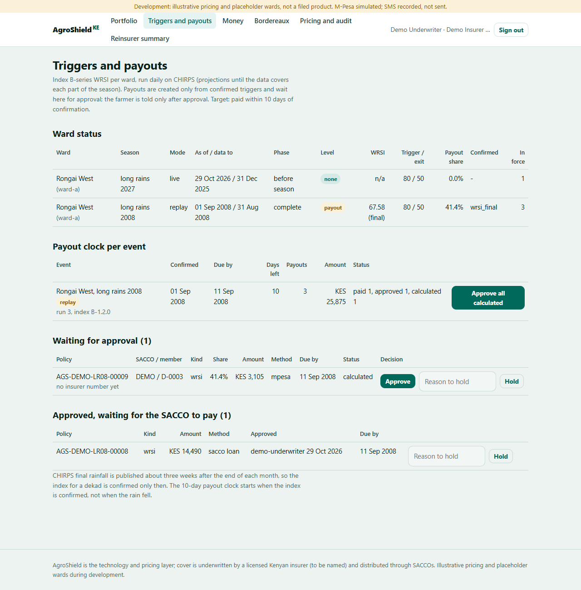
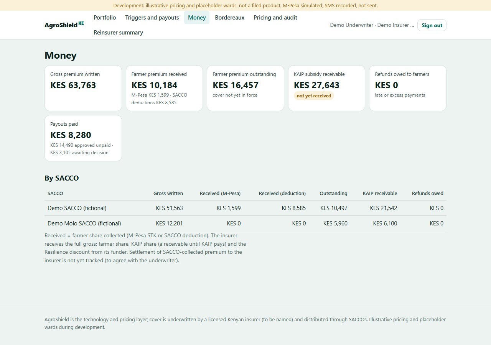
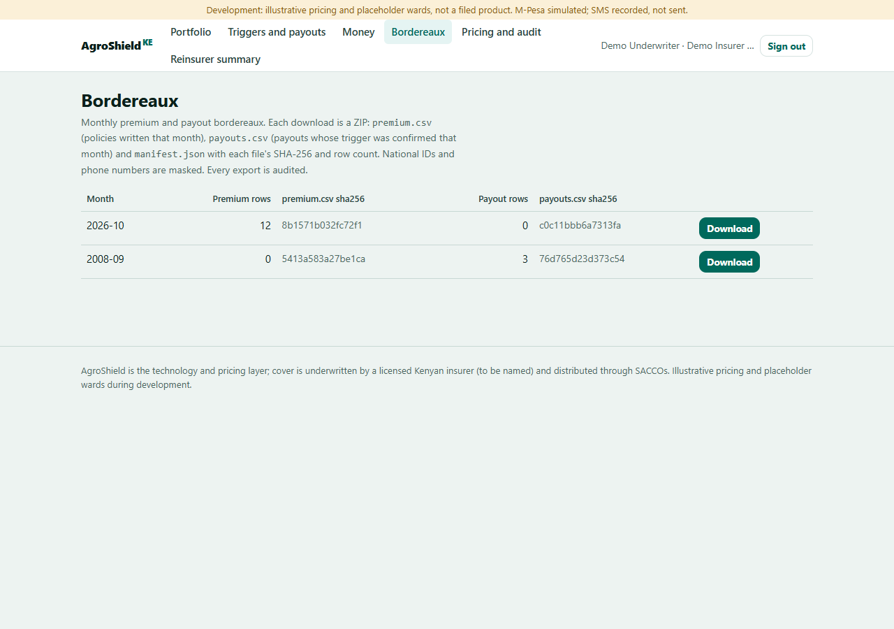
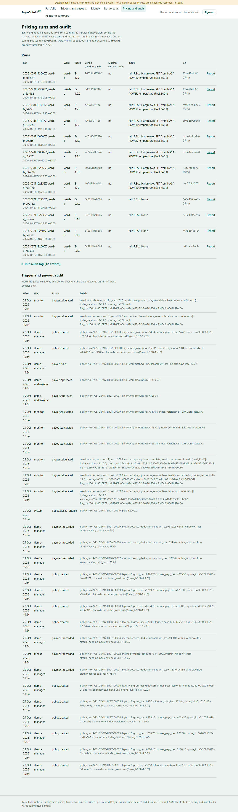
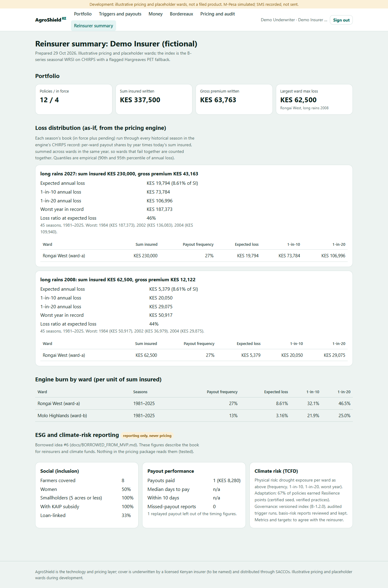
SACCO officer (demo-officer)
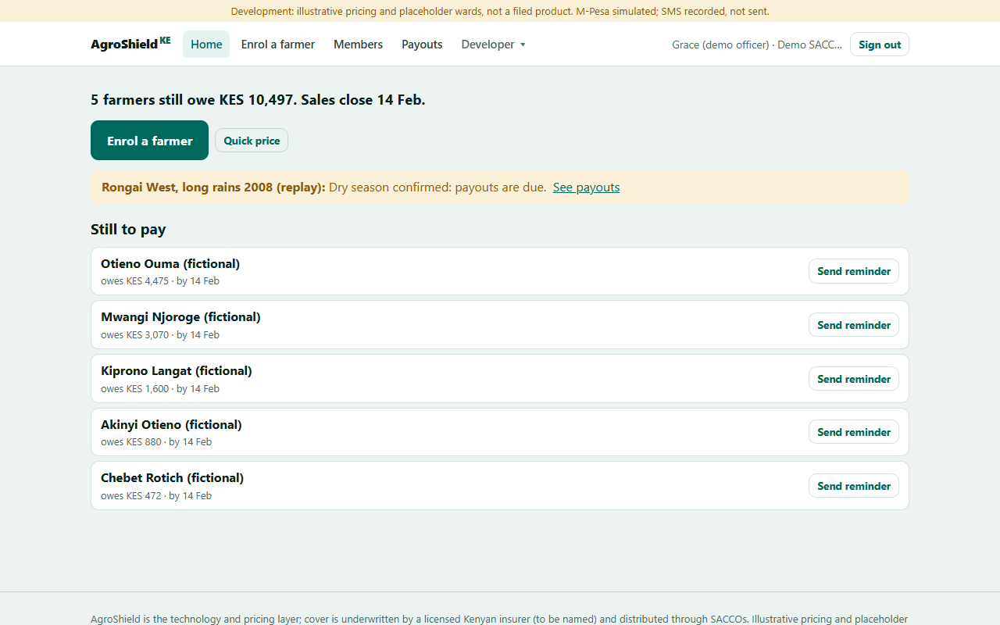
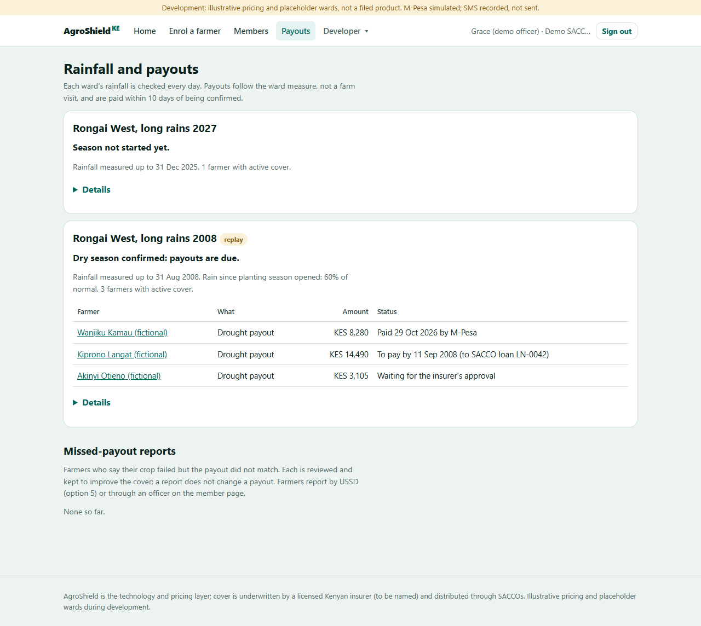
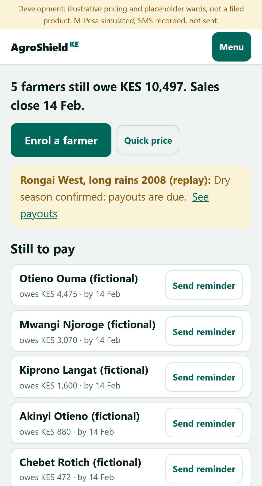
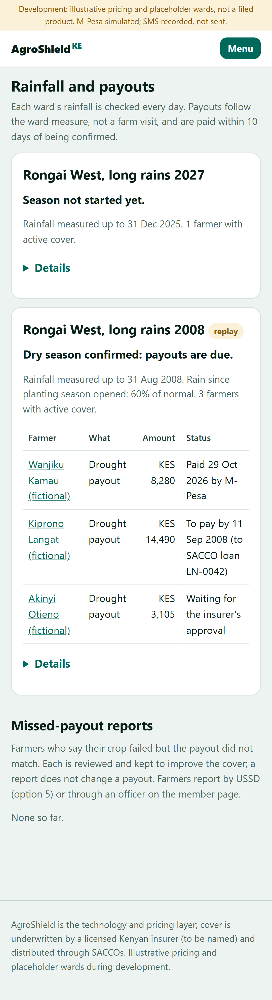
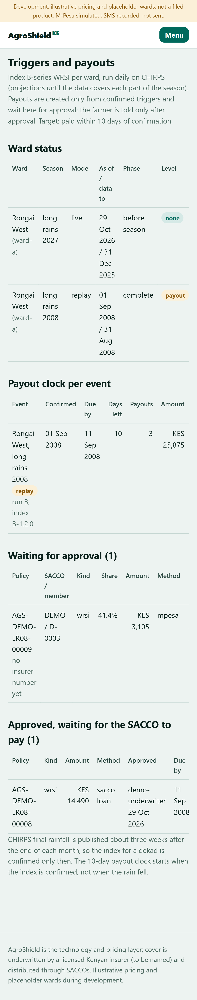